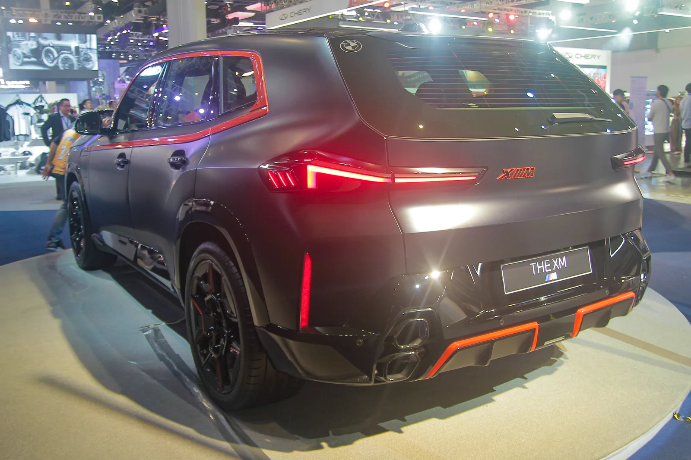

▲ BMW XM 레이블 레드. 출시가 18만5천 달러였던 이 고성능 SUV가 불과 몇 년 만에 절반 넘는 가치를 잃었다
BMW의 고성능 플래그십 SUV 'XM'이 자동차 업계에서 가장 극단적인 감가상각 사례로 다시 회자되고 있습니다. XM 레이블 레드는 출시 당시 18만5천 달러(약 2억5천만 원)에 판매됐지만, 2024년형 기준(주행거리 약 2만7,473마일) 현재 중고 시세는 8만8,898달러에서 9만9,000달러 사이에 형성돼 있습니다. 손실액만 9만6,102달러, 원래 가격의 약 52%가 사라진 셈입니다.
1. 업계 평균의 1.4배, 숫자로 보는 심각성
일반적인 SUV의 5년 감가율은 평균 44.9%, 전체 차종 평균은 41.5% 수준입니다. XM의 예상 5년 감가율은 58.1%로, SUV 평균보다도 13.2%포인트 높습니다. 절대 손실액으로 환산하면 약 9만3천 달러에 달하는데, 이는 웬만한 준중형 세단 한 대를 새로 살 수 있는 금액입니다. 애초에 신차 가격 자체가 워낙 높았던 탓에, 같은 비율로 감가되더라도 절대적인 손실 금액이 눈에 띄게 커진 것도 한몫했습니다.

▲ XM 레이블 레드 후면. 예상 5년 감가율 58.1%는 SUV 평균(44.9%)을 13.2%포인트 웃도는 수치다
2. "정체성 혼란을 겪는 18만 달러짜리 SUV"
가장 상징적인 비교는 M3 컴페티션 xDrive와의 가격 역전입니다. XM 레이블 레드의 현재 중고가(8만8,898달러)가 M3 컴페티션 xDrive의 가격(8만8,600달러)과 사실상 같아지면서, 이제 소비자들은 동일한 예산으로 두 차를 놓고 저울질할 수 있는 상황이 됐습니다. 자동차 평론가 게르하르트 혼은 이런 상황을 두고 "이건 정체성 혼란을 겪는 18만 달러짜리 SUV다. 궁극의 드라이빙 머신이 되고 싶으면서 동시에 럭셔리 SUV도 되려고 했고, 둘 다 실패했다"고 혹평했습니다.
| 항목 | 수치 |
|---|---|
| 신차가(레이블 레드) | $185,000 |
| 현재 중고가 | $88,898~$99,000 |
| 손실액 | $96,102 (약 52%) |
| 예상 5년 감가율 | 58.1% |
| SUV 업계 평균 감가율 | 44.9% |
| M3 컴페티션 xDrive 중고가 | $88,600 |

▲ XM 실내. 플러그인 하이브리드 시스템은 순수 가솔린 모델보다 중고차 시장에서 가치 하락 폭이 큰 경향이 있다
3. 왜 유독 XM만 이렇게 무너졌나
몇 가지 원인이 복합적으로 작용했습니다. 먼저 XM은 애초에 타겟층이 매우 좁은 니치 모델입니다. 18만 달러가 넘는 가격에 어울리는 소비자층 자체가 한정적인데, 그 안에서도 XM의 취향은 갈립니다. 논쟁적인 디자인 역시 감가상각을 가속화하는 요인으로 꼽힙니다. 특유의 과감한 외관은 호불호가 극단적으로 갈리는데, 중고차 시장에서는 대중적 수요가 낮은 디자인일수록 재판매가가 빠르게 떨어지는 경향이 있습니다. 여기에 플러그인 하이브리드 시스템 자체가 순수 가솔린 모델보다 중고 시장에서 가치 하락이 빠르다는 일반적 경향도 더해졌습니다.

▲ BMW M3 컴페티션 xDrive(G80). 세단인 이 모델의 중고가가 플래그십 SUV였던 XM 레이블 레드와 같은 수준까지 내려왔다
4. 정리 — 역설적으로 열리는 기회
제조사 입장에서는 뼈아픈 감가상각이지만, 중고차 구매자 입장에서는 다른 이야기가 됩니다. 9만 달러 안팎의 예산으로 4.4리터 트윈터보 V8 플러그인 하이브리드 시스템을 탑재한 고성능 플래그십 SUV를 손에 넣을 수 있다는 뜻이기 때문입니다. XM이 신차 시장에서 겪은 정체성 혼란은, 역설적으로 중고차 시장에서는 "가성비 고성능 SUV"라는 새로운 정체성을 만들어주고 있는 셈입니다.